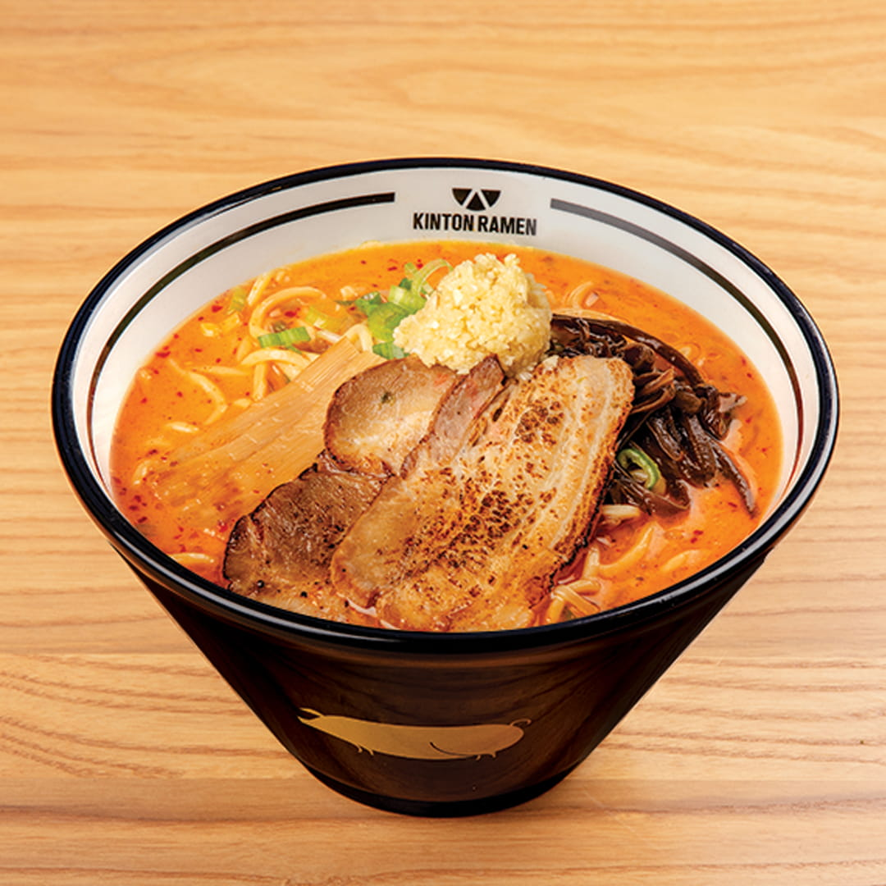

Ramen is a type of Japanese noodle soup. Every bowl of ramen has three main components: broth, noodles, and toppings.
There are four main ramen varieties named after the type of broth they use: shoyu, shio, miso, tonkotsu. Shoyu ramen, is made from a chicken broth base flavored with soy sauce. Shio ramen features a thinner chicken broth seasoned with salt. Miso ramen is thicker and heartier, with a rich, brown broth flavored with miso, or fermented bean paste. And tonkotsu ramen is made from simmered pork bones, resulting in a thick, creamy, fatty broth.
The next element in any ramen dish are the noodles. These noodles can range from thin and curly to thick and straight. The final element of a ramen dish is the toppings, and these vary widely by range. Some of the most common ramen toppings include thin slices of braised or roasted port called chashu; eggs prepared in various ways, including hard and soft boiled, poached, and even raw; along with chopped scallions, sliced bamboo, dried seaweed, steamed fish cake, canned corn, and pats or butter. This dish is traditionally eaten with chopsticks along with a soup spoon for the broth.